本章包括土石方工程、桩与地基基础工程、砌筑工程、脚手架工程、混凝土及钢筋混凝土
工程、金属结构工程、屋面及防水工程、垂直运输及超高增加、修缮工程 9 节。
一、土壤及岩石分类：
1．本章土壤按一、二类土，三类土和四类土分类，其具体分类见表1。
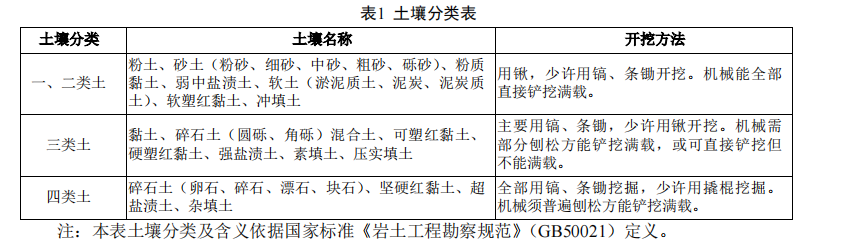
2．本章岩石按极软岩、软质岩、硬质岩分类，其具体分类见表2。
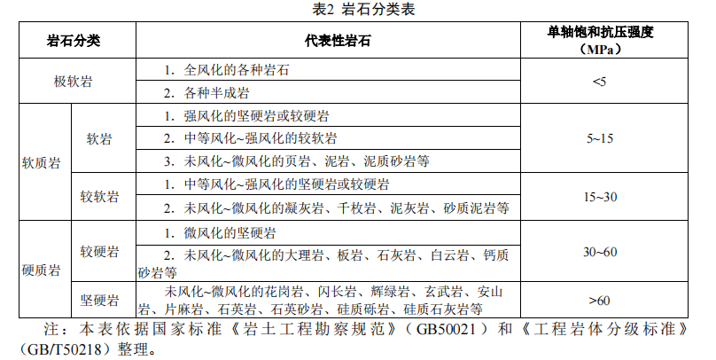
二、槽坑、一般土石方的划分：
槽坑指底宽（设计图示垫层或基础的底宽，下同）≤7m且底长>3倍底宽的沟槽，或底长≤3倍
底宽且底面积≤150m²的基坑；超出上述范围又非平整场地的，为一般土石方。
三、干土、湿土、淤泥及冻土的划分：
干土、湿土的划分，以地质勘测资料的地下常水位为准。地下常水位以上为干土，以下为湿
土。如采用降水措施的，应以降水后的水位为地下常水位，降水措施费用应另行计算。含水率超
过液限，土和水的混合物呈现流动状态时为淤泥。温度在0°C及以下，并夹有冰的土壤为冻土。
本定额中的冻土，包含短时冻土和季节冻土。
四、机械土方已综合基底和边坡遗留厚度≤0.30m的人工清理和修整，使用时不得调整。
五、下列土方工程，执行相应项目时乘以规定的系数：
1．土方子目按干土编制。人工挖、运湿土时，相应项目人工应乘以系数1.18；机械挖、运湿土
时，相应项目人工、机械应乘以系数1.15。
2．挡土板内人工挖槽坑时，相应项目人工应乘以系数1.43。
3．挖桩间土方，采用人工开挖土方定额时，相应项目人工应乘以系数1.25；采用机械挖土方定
额时，相应项目人工、机械应乘以系数1.10。
4．满堂基础垫层底以下局部加深的槽坑，按槽坑相应规则计算工程量，相应项目人工、机械
应乘以系数1.25。
5．人工垂直运土按照人工运土相应子目消耗量乘以1.50执行，运输距离按照垂直运输距离计
算。
6．推土机推土，当土层平均厚度≤0.30m时，相应项目人工、机械应乘以系数1.25。
7．挖掘机下铺设垫板、汽车运输道路上铺设材料时，其费用另行计算。
8．基础（地下室）周边回填灰土材料时，执行本定额“桩与地基基础工程”节中“ 填料加
固 ”子目，人工、机械应乘以系数 1.10。
9．在强夯后的地基上挖土方，相应子目人工、机械应乘以系数1.15。
10．人工挖土方深度＞2m子目适用于人工挖土深度≤6m的情况，人工挖土深度＞6m时，应按
机械挖土考虑。如局部＞6m仍采用人工挖土，超过部分土方每增加1m按相应定额乘以系数1.15。
七、人工、人力车、汽车的负载上坡（坡度≤15%）降效因素，已综合在相应运输项目中，不
另行计算。推土机、装载机负载上坡时，降效按坡道斜长乘以表3相应系数计算。
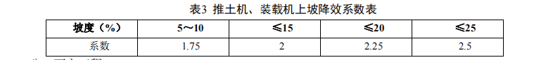
八、石方工程
1．爆破石方定额按炮眼法松动爆破编制，不分明炮、闷炮，如实际采用闷炮爆破，其覆盖材
料应另行计算。
2．爆破石方定额按数码电子雷管导电起爆编制。
3．爆破石方已综合不同开挖深度、坡面开挖、放炮、找平因素，如设计规定爆破有粒径要求
时，人工、材料和机械应另行计算。
4．定额中爆破材料按炮孔中无地下渗水、积水编制，炮孔中若出现地下渗水、积水时，处理
费用另行计算。
5．机械凿石子目不区分平基、槽坑，已综合基底和边坡遗留厚度≤0.30m的人工清理和修整，
使用时不得调整。
6．爆破石方的允许超挖量分别为：极软岩、软岩0.20m，较软岩、较硬岩、坚硬岩0.15m。
7．极软岩的机械凿石按软质岩相关定额乘以系数0.80计算。
九、平整场地指建筑物所在场地厚度≤0.30m的就地挖、填及平整。挖填土方厚度>0.30m时，
全部厚度按一般土方相应子目计算，并另计算平整场地。
十、以上均未包括现场障碍物清除、地下常水位以下的施工降水、土石方开挖过程中的地表水
排除与边坡支护。
十一、施工支护、降排水
1．井点降水中轻型井点、喷射井点、大口径井点的采用由施工组织设计确定，一般情况下，
降水深度 6m 以内采用轻型井点，6m 以上 30m 以内采用相应的喷射井点，特殊情况下可选用大口径
井点。井点使用时间按施工组织设计确定。喷射井点子目包括两根观察孔制作，喷射井管包括了内
管和外管。并点材料使用摊销量中已包括井点拆除时的材料损耗量。
2．集水井子目中包括了做井时除去挖土之外的全部工、料、机消耗量。挖土工程量合并在基
础挖土工程量内，实际井深超过4m时其工、料、机消耗量及费用允许按比例调整。
3．深井、无砂井、集水井与抽水机抽水定额配套使用。
十二、工程量计算规则
（一）土石方开挖、运输均按开挖前的天然密实体积计算。土方回填按回填后的竣工体积计
算。不同状态的土石方体积按表4换算。
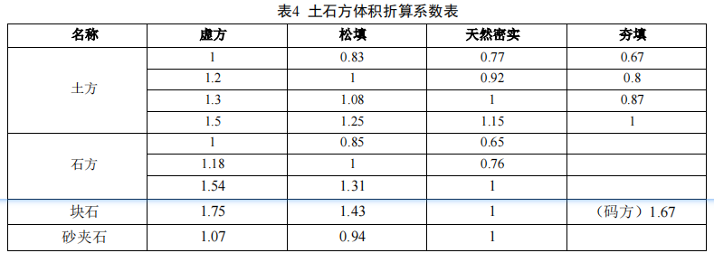
（二）基础土石方的开挖深度应按基础（含垫层）底标高至设计室外地坪标高确定。交付施工
场地标高与设计室外地坪标高不同时，应按交付施工场地标高确定。
（三）基础施工的工作面宽度按施工组织设计计算；施工组织设计无规定时按下列规定计算。
1．当组成基础的材料不同或施工方式不同时，基础施工的工作面宽度按表5计算。
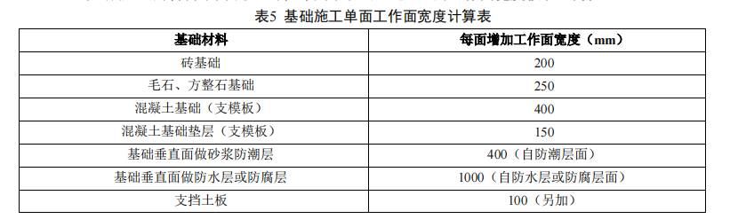
2．基础施工需要搭设脚手架时的工作面宽度，条形基础按单面1.50m计算，独立基础按四面
0.45m计算。
3．基坑土方大开挖需做边坡支护时，基础施工的工作面宽度按2m计算；基坑内施工各种桩
时，基础施工的工作面宽度按2m计算。
（四）基础土方的放坡
1．土方放坡的起点深度和放坡坡度，按施工组织设计计算；施工组织设计无规定时，按表6计
算。
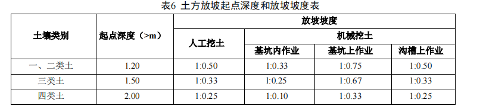
2．基础土方放坡自基础（含垫层）底标高算起。
3．混合土质的基础土方，其放坡的起点深度和放坡坡度按不同土类厚度加权平均计算。
4．计算基础土方放坡时不扣除放坡交叉处的重复工程量。
（五）沟槽土石方按设计图示沟槽长度乘以沟槽断面面积，以体积计算。
1．条形基础的沟槽长度按设计规定计算，设计无规定时按下列规定计算：
（1）外墙沟槽按外墙中心线长度计算。突出墙面的墙垛，按墙垛突出墙面的中心线长度，并
入相应工程量内计算。
（2）内墙（框架间墙）沟槽按内墙（框架间墙）条形基础的垫层（基础底坪）净长线长度计
算。
（3）突出墙面的墙垛的沟槽，按墙垛突出墙面的中心线长度，并入相应工程量内计算。
2．沟槽的断面面积应包括工作面、放坡或石方允许超挖的面积。
（六）基坑土石方，按设计图示基础（含垫层）尺寸，另加工作面宽度、土方放坡宽度或石方
允许超挖量乘以开挖深度，以体积计算。
（七）一般土石方，按设计图示基础（含垫层）尺寸，另加工作面宽度、土方放坡宽度或石方
允许超挖量乘以开挖深度，以体积计算。机械施工坡道的土石方工程量，并入相应工程量内计算。
（八）挖淤泥流砂按设计图示位置、界限，以体积计算。
（九）桩间挖土指桩承台外缘向外1.20m的挖土；相邻桩承台外缘间距离≤4m时，其间的挖土
全部为桩间挖土。桩间挖土不扣除桩体和空孔所占体积。
（十）人工挖（含爆破后挖）冻土，按设计图示尺寸，另加工作面宽度，以体积计算。
（十一）回填及其他
1．平整场地，按设计图示尺寸，以建筑物（构筑物）首层建筑面积（结构外围内包面积）计
算。建筑物地下室结构外边线突出首层结构外边线时，其突出部分的建筑面积合并计算。
2．基底钎探以垫层（或基础）底面积计算。
3．原土夯实与碾压，按施工组织设计规定的尺寸，以面积计算。
4．回填土夯填按下列规定，以体积计算：
（1）沟槽、基坑回填，按挖方体积减去设计室外地坪以下建筑物、基础（含垫层）的体积计
算。
（2）房心（含地下室内）回填，按主墙间净面积（扣除单个底面积2m²以上的基础等）乘以回
填厚度计算。
（3）场区（含地下室顶板以上）回填，按回填面积乘以回填平均厚度计算。
（十二）土方运输，按挖方体积减去回填方体积，以天然密实体积计算。
（十三）施工支护、降排水
1．沟槽、基坑挡土板面积按槽坑垂直支撑面积计算，宽度按设计图示宽度单面加 0.10m、双面
加 0.20m 计算。
2．井点套组成：轻型井点50根为一套，喷射井点30根为一套，大口径井点10根为一套。井点
安拆累计根数不足一套时按一套计算；井点降水使用天应以每昼夜 24 小时为一天，使用天数应按
施工组织设计确定。
3．井管间距应根据地质条件和施工降水要求，依施工组织设计确定，施工组织设计没有确定
时，可按轻型井点管间距 0.8～1.6m、喷射井点管间距 2～3m、大口径井点管间距 8～10m确定。
4．抽水机抽水以8小时为一台班计算，实际不足 4 小时按 0.5 个台班计算，超过 4 小时不足 8
小时按一个台班计算；昼夜连续作业时，一昼夜按3个台班计算。
一、本节定额适用于陆上桩基工程， 不同土壤类别、机械类别和性能均包括在定额内。
二、本节定额未考虑桩基施工前场地平整、压实地表、地下障碍物处理等费用，发生时另行计
算。
三、探桩位已综合考虑在各类桩基定额内，不另行计算。
四、预制桩
1．单独打试桩、锚桩，相应子目人工及机械乘以系数 1.5。
2．打桩工程按陆地打垂直桩编制。设计要求打斜桩时，斜度 ≤1：6 时，相应子目人工及机械
乘以系数 1.25；斜度 >1：6 时，相应子目人工及机械乘以系数 1.43。
3．打桩工程以平地（坡度≤15°）打桩为准，坡度>15°时，相应子目人工及机械乘以系数
1.15。如在基坑（基坑深度>1.50m，基坑面积≤500m²）或沟槽（沟槽深度>1m）内打桩时，相应子
目人工及机械乘以系数 1.11。
4．在桩间补桩或在强夯后的地基上打桩时，相应子目人工及机械乘以系数 1.15。
5．打、压预制钢筋混凝土桩，预应力钢筋混凝土管桩按购入成品构件考虑。
6．本节定额未包括预应力钢筋混凝土管桩钢桩尖制安子目，实际发生时执行本定额“混凝土
及钢筋混凝土工程”节中“预埋铁件”子目。
五、灌注桩
1．钻孔、冲孔、旋挖成孔等灌注桩设计要求进入岩石层时执行入岩子目。
2．旋挖成孔、冲孔桩机带冲抓锤成孔灌注子目按湿作业成孔考虑，如采用干作业成孔工艺
时，则扣除定额子目中的黏土、水和机械中的泥浆泵。
3．灌注桩定额均已包括充盈系数和材料损耗，详见表 7。
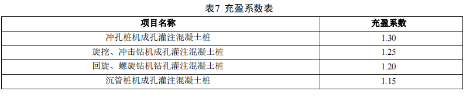
4．桩孔空钻部分回填应根据施工组织设计要求套用相应定额，回填土执行本定额“土石方工
程”节中“松填土”子目；回填碎石执行本定额“桩与地基基础工程”节中“碎石填铺”子目，并
乘以系数 0.70。
5．干作业成孔桩的土石方场内、场外运输，执行本定额“土石方工程”节中相应子目。
6．本节定额内未包括沉管灌注桩的预制尖制安子目，实际发生时执行本定额“混凝土及钢筋
混凝土工程”节中相应子目。
7．灌注桩后压浆注浆管、声测管埋设定额如遇材质、规格不同时，可以换算，其余不变。
8．注浆管埋设定额按桩底注浆考虑，如设计采用侧向注浆，人工及机械乘以系数 1.20。
六、填料桩的充盈系数为 1.30，实测砂石配合比及充盈系数不同时可以调整。其中砂石桩除上
述充盈系数和损耗率外，还包括级配密实系数 1.334。
七、高压旋喷桩子目已综合接头处的复喷工料。
八、三轴搅拌桩水泥掺入比按加固土重（1800kg/m3）的 18%考虑，如设计不同时按水泥掺入
比每增 1%项目计算。定额按二搅二喷施工工艺考虑，设计不同时，每增（减）1 搅 1 喷按相应项目
人工及机械增（减）40%计算。设计要求全断面套打时，相应子目人工及机械乘以系数 1.50，其余
不变。
九、各种桩基如需试桩，其数量由设计确定，计入工程数量。
十、打、拔钢板桩子目仅考虑正常施工条件下的钢板桩损耗量，钢板桩使用费应根据施工组织
设计确定的使用时间，采用每季度使用费子目另计。
十一、边坡喷射混凝土钢筋的制作、安装、吊装执行本定额“混凝土及钢筋混凝土工程”节中
相应子目。
十二、基坑支撑挖土子目适用于地下连续墙、钢板桩等围护结构且跨度＞8m 的基坑开挖，定额
中已包括湿土排水内容。
十三、地下连续墙子目适用于粘土、砂土及冲填等软土层，硬质岩可考虑入岩增加费。
1．地下连续墙及导墙钢筋的制作、安装、吊装执行本定额“混凝土及钢筋混凝土工程”节中
相应子目。
2．地下连续墙混凝土子目已考虑垂直度、超挖深度和超灌量的损耗。
3．锁口管吊拔子目已包括锁口管的摊销。
十四、填料加固夯填灰土就地取土时，应扣除灰土配比中的黏土。
十五、注浆加固
1．浆体材料用量可按照设计含量调整。
2．注浆管消耗量为摊销量，若为一次性使用可进行调整。
3．废浆处理及外运执行本定额“土石方工程”节中相应子目。
十六、施工量测指对工程周边范围地表、建筑物、构筑物、地下水及工程本身的沉降、位移、
压力、应力、应变的测试和信息反馈，适用于建设单位确认需要监测的工程项目。
十七、工程量计算规则
（一）预制桩
1．钢筋混凝土方桩按设计桩长（包括桩尖）乘以横截面面积，以体积计算。
2．钢筋混凝土管桩
（1）钢筋混凝土管桩按设计桩长（不包括桩尖），以长度计算。
（2）钢筋混凝土管桩钢桩尖按设计图图示尺寸，以重量计算。
（3）管桩桩芯填混凝土按设计尺寸，以灌注体积计算。
3．打桩工程的送桩均按设计桩顶标高至打桩前的自然地坪标高另加 0.50m 计算。
4．预制桩电焊接桩按设计要求接桩头的数量计算。
5．预制桩截桩长度 ≤1m 时，不扣减相应的打压桩工程量；截桩长度 >1m 时，超过部分按实
扣减打压桩工程量，但桩体的价格不扣除。
6．预制桩凿桩头长度设计无规定时，桩头长度按 40 d（d 为桩体主筋直径，主筋直径不同时
取大值）计算。
（二）灌注桩
1．钻孔桩、旋挖桩成孔工程量按成桩前自然地坪标高至设计桩底标高的成孔长度乘以设计桩
径截面积，以体积计算。入岩增加费工程费按实际入岩深度乘以设计桩径截面积，以体积计算。
2．冲孔桩机冲抓锤成孔工程量分别按进入土层、岩石层的成孔长度乘以设计桩径截面积，以
体积计算。
3．钻孔桩、旋挖、冲孔灌注混凝土工程量按设计桩径截面积乘以设计桩长（包括桩尖）另加
超灌长度，以体积计算。超灌长度设计有规定时按设计要求计算，无规定时按 0.50m 计算。
4．沉管成孔工程量按打桩前自然地坪标高至设计桩底标高（不包括预制桩尖）的成孔长度乘
以钢管外径截面积，以体积计算。
5．沉管桩灌注混凝土工程量按钢管外径截面积乘以设计桩长（不包括预制桩尖）另加超灌长
度，以体积计算。超灌长度设计有规定时按设计要求计算，无规定时按 0.50m 计算。
6．钻（冲）孔灌注桩，设计要求扩底时，其扩底工程量按设计尺寸，以体积计算，并入相应
的工程量内。
8．桩孔回填工程量按打桩前自然地坪标高至加灌长度的顶面的高差乘以桩孔截面积，以体积
计算。
9．注浆管、声测管埋设按打桩前的自然地坪标高至设计桩底标高的另加 0.50m 计算长度，乘
以每米重量以 t 计算。
10．柱底（侧）后压浆工程量按设计注入水泥用量，以 t 计算。如水泥用量差别大，允许换
算。
11．泥浆运输执行本定额“土石方工程”节中相应子目，工程量按成孔工程量，以体积计
算。
12．灌注桩凿桩头按设计超灌高度（设计无规定时按 0.50m）乘以桩身设计截面积以体积计
算。
（三）砂石桩、碎石桩、灰土挤密桩均按设计桩长（包括桩尖）乘以设计桩径截面积，以体积
计算。
（四）CFG 桩按设计桩长（包括桩尖）另加 0.50m 乘以桩径截面面积，以体积计算。扩体的体
积已计入定额内。
（五）高压旋喷水泥桩、水泥搅拌桩按设计桩长另加 0.50m 乘以设计桩外径截面积，以体积计
算。三轴水泥搅拌桩不扣除圆形重叠部分体积（即单轴体积乘以 3），套打部分体积不得重复计算。
空孔部分按设计桩顶标高到自然地坪标高减导向沟的深度（设计未明确时按 1m 考虑），以体积计
算。
（六）钢支撑按设计图示尺寸以重量计算，不扣除孔眼质量，焊条、铆钉、螺栓等不另增加质
量。
（七）地下连续墙
1．地下连续墙成槽土方工程量，按地下连续墙中心线长度、厚度和槽深（加超深 0.50m），
以体积计算。
2．锁口管及清底置换以“段”为单位（段指槽壁单元槽段），其工程量按连续墙段数加 1 计
算。
3．浇筑连续墙混凝土工程量，按地下连续墙设计长度、墙厚和墙高加 0.50m，以体积计算。
4．凿地下连续墙超灌混凝土，设计无规定时，其工程量按墙体断面面积乘以 0.50m，以体积
计算。
（八）分层注浆钻孔按设计图示以钻孔深度计算，分层注浆按设计图纸注明加固土体的体积计
算。
（九）压密注浆钻孔按设计图示以钻孔深度计算，压密注浆按下列规定计算：
1．设计图纸明确加固土体体积的，按设计图纸注明的体积计算。
2．设计图纸以布点形式图示土体加固范围的，按两孔间距的一半作为扩散半径，以布点边线
各加扩散半径形成计算平面，计算注浆体积。
3．设计图纸注浆点在钻孔灌注桩之间，按两孔间距的一半作为每孔的扩散半径，以此圆柱体
积计算注浆体积。
一、砖砌体、砌块砌体、石砌体
1．定额中砖、砌块和石料按标准或常用规格计列，砌筑砂浆按干混砂浆编制，设计与定额不
同时，应作调整换算。
2．定额中砌筑墙体高度按 3.60m 编制，如超过 3.60m 时，其超过部分工程量的定额人工乘以系
数 1.3。
3．基础与墙（柱）身的划分：
（1）基础与墙（柱）身使用同一种材料时，以设计室内地面为界（有地下室时，以地下室室
内设计地面为界）。
（2）基础与墙（柱）身使用不同材料时，位于设计室内地面高度±0.30m 以内时，以不同材料
为界；高度±0.30m 以外时，以设计室内地面为界。
（3）砖砌地沟不分墙基和墙身，按不同材质合并工程量套用相应子目。
（4）围墙以设计地坪为界。
4．石基础、石墙、石勒脚的划分：基础与勒脚应以设计室外地坪为界，勒脚与墙身应以设计
室内地面为界。石围墙内、外地坪标高不同时，应以较低地坪标高为界。内、外标高之差为挡土墙
时，挡土墙以上为墙身。
5．砖基础不分砌筑宽度及有无大放脚，均执行对应品种及规格砖的同一子目。地下混凝土构
件所用砖膜及砖砌挡土墙套用砖基础子目。
6．砖砌体和砌块砌体不分内、外墙，均执行对应品种的砖和砌块子目，其中：
（1）定额中均已包括立门窗框的调直以及腰线、窗台线、挑檐等一般出线用工。
（2）清水砖砌体均包括原浆勾缝用工，设计需加浆勾缝时，应另行计算。
（3）轻集料混凝土小型空心砌块墙的门窗洞口等镶砌的同类实心砖部分已包含在定额内，不
另行计算。
7．填充墙灌料按炉渣、炉渣混凝土编制，如设计与定额不同时应作换算，其他不变。
8．加气混凝土类砌块墙项目已包括砌块零星切割改锯的损耗及费用。
9．地下室外墙保护墙部位的贴砌砖套用贴砌砖墙子目。
10．多孔砖、空心砖及砌块砌筑有防水、防潮要求的墙体时，若以普通（实心）砖作为导墙砌
筑的，导墙与上部墙身主体需分别计算，导墙部分套用零星砌体子目。
11．围墙套用墙相关定额子目；双面清水围墙套用单面清水墙子目，定额人工乘以系数 1.15。
12．石砌体定额中的粗、细料石（砌体）墙按 400×220×200 规格编制。
13．毛石护坡高度超过 4m 时，定额人工乘以系数 1.15。
14．定额中各类砖、砌块及石砌体的砌筑均按直形砌筑编制，如为圆弧形砌筑，按相应定额人
工乘以系数 1.10，砖、砌块及石砌体及砂浆（粘结剂）乘以系数 1.03。
二、立面保温隔热
1．保温层的保温材料配合比、材质、厚度与设计不同时，可以换算。
2．弧形墙墙面保温隔热层，按相应定额人工乘以系数 1.10。
3．立面保温隔热按墙身编制，当为柱面保温隔热时，定额子目人工乘以系数 1.19、材料乘以
系数 1.04。
4．墙面保温板采用钢骨架时，钢骨架执行本定额“墙柱面工程”节中相应子目。
三、工程量计算规则
（一）砖砌体、砌块砌体、石砌体
1．砖基础工程量按设计图示尺寸以体积计算。
（1）包括附墙垛基础宽出部分体积，扣除地梁（圈梁）、构造柱所占体积，不扣除基础大放脚
T 形接头处的重叠部分及嵌入基础内的钢筋、铁件、管道、基础砂浆防潮层和单个面积≤0.30m²的
孔洞所占体积，靠墙暖气沟的挑檐不增加。
（2）基础长度：外墙按外墙中心线长度计算，内墙按内墙净长线长度计算。
2．砖墙、砌块墙按设计图示尺寸以体积计算。
（1）扣除门窗、洞口、嵌入墙内的钢筋混凝土柱、梁、圈梁、挑梁、过梁及凹进墙内的壁
龛、管槽、暖气槽、消火栓箱所占体积，不扣除梁头、板头、檩头、垫木、木楞头、沿缘木、木
砖、门窗走头、砖墙内加固钢筋、木筋、铁件、钢管及单个面积≤0.30m²的孔洞所占的体积。凸出
墙面的腰线、挑檐、压顶、窗台线、虎头砖、门窗套的体积亦不增加。凸出墙面的砖垛并入墙体体
积内计算。
（2）墙长度：外墙按外墙中心线长度计算，内墙按内墙净长线长度计算。
（3）墙高度：
①外墙：斜（坡）屋面无檐口天棚算至屋面板底；有屋架且室内、外均有天棚算至屋架下弦底
另加 0.20m；无天棚时算至屋架下弦底加 0.30m，出檐宽度超过 0.60m 时按实砌高度计算；有钢筋
混凝土楼板隔层算至板顶；平屋顶算至钢筋混凝土板底。
②内墙：位于屋架下弦时算至屋架下弦底；无屋架时算至天棚底另加 0.10m；有钢筋混凝土楼
板隔层算至楼板顶；有框架梁时算至梁底。
③女儿墙：从屋面板上表面算至女儿墙顶面（如有混凝土压顶时算至压顶下表面）。
④内、外山墙：按其平均高度计算。
（4）框架间墙不分内外墙，按墙体净尺寸以体积计算。
（5）围墙高度算至压顶上表面（如有混凝土压顶时算至压顶下表面），围墙柱并入围墙体积
内。
3．空斗墙按设计图示尺寸以空斗墙外形体积计算。
（1）墙角、内外墙交接处、门窗洞口立边、窗台砖、屋檐处的实砌部分体积并入空斗墙体积
内。
（2）空斗墙的窗间墙、窗台下、楼板下、梁头下等实砌部分应另行计算，套用零星砌体项
目。
4．空花墙按设计图示尺寸以空花部分外形体积计算，不扣除空花部分体积。
5．砖柱按设计图示尺寸以体积计算，扣除混凝土及钢筋混凝土梁垫、梁头、板头所占体积。
6．砌体设置导墙时，砖砌导墙需单独计算，厚度与长度按墙身主体，高度以实际砌筑高度计
算，墙身主体的高度相应扣除。
7．石基础、石墙的工程量计算规则参照砖砌体相应规定。
8．附墙烟囱、通风道、垃圾道等未列明的零星项目套用零星砌体子目，以体积计算。
（二）立面保温隔热
1．墙体保温隔热层工程量按设计图示尺寸以面积计算，扣除门窗洞口及面积 >0.30m² 梁、孔洞
所占面积；门窗洞口侧壁以及与墙相连的柱，并入保温墙体工程量内。墙体及混凝土板下铺贴隔热
层不扣除木框架及木龙骨的体积。外墙按隔热层中心线长度计算，内墙按隔热层净长度计算。
2．柱、梁保温隔热层工程量按设计图示尺寸以面积计算。柱按设计图示柱断面保温层中心线
展开长度乘以高度以面积计算，扣除面积 >0.30m² 梁所占面积。梁按设计图示梁断面保温层中心线
展开长度乘以保温层长度以面积计算。
3．大于 0.30m² 孔洞侧壁周围及梁头、连系梁等其他零星工程保温隔热层工程量，并入墙面保
温隔热工程量内。
一、脚手架措施项目是指施工需要的脚手架搭、拆、运输及脚手架摊销的工料消耗。
二、脚手架措施项目材料均按钢管式脚手架编制。
三、脚手架消耗量中未包括脚手架基础加固。基础加固指脚手架立杆下端以下或脚手架底座下
皮以下的做法。
四、综合脚手架
1．适用于能够按《民用建筑通用规范》（GB55031）计算建筑面积的建筑工程的脚手架，不适
用于构筑物及附属工程脚手架。
2．单层建筑综合脚手架适用于檐高20m 以内工程。
3．综合脚手架中包括外墙砌筑和粉饰脚手架、3.60m以内的内墙砌筑、混凝土浇捣、内墙面和
天棚粉饰脚手架。
4．钢结构厂房综合脚手架定额：单层按檐高7m以内编制，多层按檐高20m以内编制，若檐高
超过编制标准，应按每增加1m定额计算，超过部分不足1m时按1m计算。单层厂（库）房檐高超过
16m，多层厂（库）房檐高超过30m时，应根据施工方案补充分析。
5．执行综合脚手架有下列情况时，可另执行单项脚手架相应子目：
（1）砌筑高度3.60m 以外的砖内墙，按单排脚手架定额乘以系数 0.30；砌筑高度3.60m以外的
砌块内墙，按相应双排外脚手架定额乘以系数 0.30。
（2）室内墙面粉饰高度在 3.60m 以外的执行内墙面粉饰脚手架子目。
（3）层高超过3.60m天棚需抹灰、刷油、吊顶等装饰时，可增列满堂脚手架，不另计算墙面粉
饰脚手架。
（4）室内浇筑高度3.60m 以外的混凝土墙，按单排脚手架定额乘以系数 0.3；室内浇筑高度
3.60m 以外的混凝土独立柱、单（连续）梁执行双排外脚手架定额项目乘以系数 0.3；室内浇筑高度
3.60m 以外的楼板，执行满堂脚手架定额项目乘以系数 0.30。
（5）女儿墙砌筑或浇筑高度超过1.20m 时，执行里脚手架子目。
五、单项脚手架
凡不适宜使用综合脚手架的项目，可按相应的单项脚手架项目执行。
1．建筑物外墙脚手架，设计室外地坪至檐口的砌筑高度在15m以内的按单排脚手架计算；砌筑
高度在15m以外或砌筑高度虽不足15m，但外墙门窗及装饰面积超过外墙表面积60%时，执行双排脚
手架子目。
2．外脚手架已综合斜道、上料平台、护卫栏杆等。
3．建筑物内墙设计室内地坪至板底（或山墙高度的 1/2 处）的砌筑高度在3.60m以内的，执行
里脚手架子目。
4．砌筑高度在1.20m以外的屋顶烟囱脚手架，按设计图示烟囱外围周长另加3.60m 乘以烟囱出
屋顶高度以面积计算，执行里脚手架子目。
5．砌筑高度在1.20m以外的管沟墙及砖基础，按设计图示砌筑长度乘以高度以面积计算，执行
里脚手架子目。
6．围墙脚手架，地坪至围墙顶面的砌筑高度在3.60m以内的，按里脚手架计算；砌筑高度在
3.60m以外的，执行单排外脚手架子目。
7．石砌墙体，砌筑高度在1.20m以外时，执行外脚手架子目。
8．大型设备基础，凡距地坪高度在1.20m以外的，执行双排外脚手架子目。
9．挑脚手架适用于外檐挑檐等部位的局部装饰。
10．水平防护架和垂直防护架是指脚手架以外单独搭设的，用于车辆通道、人行通道、临街防
护和施工与其他物体隔离等的防护。
11．梁板超高、超重导致支模困难，采用满堂式钢管支架辅助施工的，可使用满堂式钢管支架
定额，不再计取浇筑混凝土超高费用。
六、工程量计算规则
（一）建筑物檐高以设计室外地坪至檐口滴水高度（平屋顶指屋面板板底高度，斜屋面指外墙
外边线与斜屋面板底的交点）为准。突出主体建筑屋顶的楼梯间、电梯间、水箱间、屋面天窗等不
计入檐口高度。
（二）综合脚手架按建筑面积计算。
（三）单项脚手架
1．外脚手架按外墙外边线长度（含墙垛及附墙井道）乘以外墙高度，以面积计算。有女儿墙
时，外墙高度计至女儿墙顶面。
2．计算内、外墙脚手架时，均不扣除门、窗、洞口、空圈等所占面积。同一建筑物高度不同
时，应按不同高度分别计算。
3．独立柱按设计图示尺寸，以结构外围周长另加 3.60m 乘以高度以面积计算，执行双排外脚
手架子目乘以系数 0.30。
4．现浇钢筋混凝土梁按梁顶面至地面（或楼面）间的高度乘以梁净长以面积计算，执行双排
外脚手架子目乘以系数 0.30。
5．满堂脚手架按室内净面积计算，其高度在 3.60~5.20m 之间时计算基本层；高度超过 5.20m
时，每增加 1.20m 计算一个增加层；高度不足 0.60m 时，按一个增加层乘以系数 0.50 计算。
6．吊篮脚手架按施工区域的外墙垂直投影面积计算，不扣除门窗洞口所占面积。
7．内墙面粉饰脚手架按内墙面垂直投影面积计算，不扣除门窗洞口所占面积。
8．里脚手架按墙面垂直投影面积计算。
9．水平防护架按建筑物临街长度另加 10 m，乘以搭设宽度，以面积计算。
10．垂直防护架按建筑物临街长度，乘以建筑物檐高，以面积计算。
（四）电梯安装井道脚手架按单孔以座计算。
一、混凝土构件中综合考虑构件模板，模板支撑含量已综合钢支撑和木支撑，实际采用不同时
不得换算。模板工程工作内容包括清理、场内运输、模板制作（预制构件模板包括刨光，现浇构件
模板不刨光）、安装、刷隔离剂、浇灌混凝土时模板维护、拆模、集中堆放、场外运输等。
二、现浇混凝土异形柱综合考虑椭圆形、圆形、多边形等截面形式，现浇（预制）混凝土异形
梁综合考虑L、工、T、十字形等截面形式。
三、现浇钢筋混凝土模板支模高度说明
1．支模高度按下列规定计算：
（1）柱、墙支模高度：首层按室外地坪（地下室按室内地坪）至上层楼面，楼层按层高。
（2）有梁板、平板支模高度：首层按室外地坪（地下室按室内地坪）至板底，楼层按板面至
板底。
（3）梁支模高度：首层按室外地坪（地下室按室内地坪）至梁底，楼层按梁面（或板面）至
梁底。
2．现浇柱、梁、墙、板模板支模高度按4.50m编制，超过部分按浇筑混凝土超高增加定额计
算。
四、现浇钢筋混凝土柱墙定额子目，均按规范规定综合底部灌注干混砂浆用量。
五、毛石混凝土按毛石占混凝土体积20%编制，设计要求不同时可抽换。
六、预制混凝土构件安装
1．构件安装不分履带式起重机或轮胎式起重机，已综合考虑编制。
2．构件安装按机械起吊点中心回转半径≤15m距离计算；回转半径＞15m时，构件须用起重机
移运就位，且运距≤50m时，起重机械乘以系数1.25；运距＞50m 时，应另按构件运输子目计算。
3．零星构件指每件体积在 0.05 m3 以内、定额中未列的项目。
4．构件安装不包括运输、安装过程中起重机械、运输机械场内行驶道路的加固、铺垫工作的
人工、材料、机械消耗。
5．除塔吊施工外，构件安装高度按20m以内综合考虑；安装高度大于20m并小于30m时，相应
子目人工及机械乘以系数1.20；安装高度大于30m 时，另行分析。
6．构件安装如需搭设脚手架，应按施工组织设计要求，执行本定额“脚手架工程”节中相应
子目。
7．单层房屋屋盖系统预制混凝土构件须在跨外安装时，相应子目人工及机械乘以系数 1.18。
七、混凝土泵送定额包括施工现场采用混凝土输送泵（包括固定泵和活动泵）及输送管道将混
凝土输送到施工部位直至入模所需的消耗。
八、钢筋
1．钢筋工程中措施钢筋，按设计图纸规定及施工验收规范要求计算，按品种、规格执行相应
子目；如采用其他材料时，另行计算。
2．型钢组合混凝土构件的钢筋工程执行相应子目时，人工乘以系数1.50，机械乘以系数1.15；
型钢骨架执行本定额“金属结构工程”节中相应子目。
4．弧形构件的钢筋工程执行相应子目时，人工乘以系数1.05。
5．预应力混凝土构件中非预应力钢筋执行钢筋相应子目。
6．非预应力钢筋未包括冷加工，如设计要求冷加工时，应另行计算；预应力钢筋如设计要求
人工时效处理时，应另行计算。
7．后张法钢筋的锚固按钢筋帮条焊、U 形插垫编制，如采用其他方法锚固时，应另行计算。
8．预应力钢丝束，钢绞线综合考虑一端、两端张拉；锚具按单锚、群锚分别列项，单锚按单
孔锚具列入，群锚按3孔锚具列入。
9．现浇混凝土零星构件的钢筋工程执行相应子目时，人工及机械乘以系数2 。
九、混凝土预制构件运输
1．构件运输定额适用于30km 以内堆放场地或加工厂至施工现场的运输。
2．定额已综合考虑施工现场内、外（现场、城镇）运输道路等级、路况、重车上下坡等不同
因素。
3．构件运输不包括桥梁、涵洞、道路加固、管线、路灯迁移及因限载、限高而发生的加固、
扩宽、公交管理部门要求的措施等因素。
4．预制混凝土构件运输按“表8 预制混凝土构件分类表”划分的类别套用相应子目。
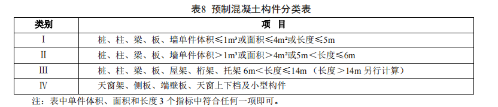
十、工程量计算规则
（一）混凝土现浇构件工程量，均不扣除钢筋、铁件和螺栓所占的体积。
（二）现浇墙、板均不扣除面积在0.30m2以内孔洞的混凝土体积。
（三）基础
1．杯形基础杯口高度大于杯口长度时，按高杯基础定额执行。杯形基础、高杯基础按实体积
计算。
2．设备基础除块体外，其他类型设备基础分别按基础、柱、梁、墙、板相应子目计算。设备
基础的预留孔洞的体积应予扣除。
3．肋高与肋宽之比在4：1以内的带形基础，按有肋式带形基础计算；超过4：1时，其基础底
板按板式带形基础计算，基础底板以上部分按墙计算。
4．构筑物基础套用建筑物基础相应子目。
（四）柱按设计图示断面尺寸乘以柱高，以体积计算。柱高按下列规定计算：
1．有梁板的柱高，应自柱基上表面（或楼板上表面）至上一层楼板上表面之间的高度计算。
2．无梁板柱高，应自柱基上表面（或楼板上表面）至柱帽下表面之间的高度计算。
3．构造柱按全高计算，与砖墙嵌接部分的体积并入柱身体积内计算。
4．依附柱上的牛腿，并入柱身体积内计算。
（五）梁按设计图示断面尺寸乘以梁长，以体积计算。梁长按下列规定计算：
1．梁与柱连接时，梁长算至柱侧面。
2．主梁与次梁连接时，次梁长算至主梁侧面。
3．伸入砌块墙内梁头、梁垫体积并入梁体积内计算。
（六）墙按设计图示中心线长度乘以墙高及厚度，以体积计算，应扣除门窗洞口及0.30m2以外
的孔洞体积，墙垛及突出部分并入墙体积内计算。
（七）板按设计图示面积乘以板厚，以体积计算，其中：
1．有梁板包括主、次梁与板，按梁、板体积之和计算。
2．无梁板按板和柱帽体积之和计算。
3．平板按板实体体积计算。
4．现浇挑檐、天沟与板（包括屋面板、楼板）连接时，以外墙为分界线；与梁连接时，以梁
外边线为分界线。
5．各类板伸入砌块墙内的板头并入板体积内计算。
6．整体楼梯包括休息平台、平台梁、斜梁及楼梯的连接梁，按水平投影面积计算，不扣除宽
度小于0.50m的楼梯井，伸入墙内部分不另增加。
（八）其他
1．栏板以 体积计算，包括伸入墙内的栏板。
2．现浇天沟与梁连接时，以梁外表面为分界线，分别按相应子目计算。
3．现浇在屋面板上或加高天沟沟壁作装饰女儿墙时，厚度80以内按挑檐天沟子目执行；厚度
80以外按直形墙子目执行。
4．带反挑檐的雨篷按体积并入雨篷内计算。
5．混凝土地沟、井、池等子目，底板执行混凝土满堂基础相应子目，侧壁执行混凝土墙相应
子目，顶板执行混凝土板相应子目。
（九）混凝土预制构件工程量，按下列规定计算：
1．混凝土工程量均按实体体积计算，不扣除构件内钢筋、铁件、螺栓及面积≤300×300孔洞，
扣除空心板空洞体积。
2．混凝土与钢杆件组合的构件，混凝土部分按构件实体体积计算，钢构件部分按重量 计算，
分别套用相应的子目。预制柱的钢牛腿按零星钢构件计算。
3．预制悬臂梁套用预制梁相关子目。
（十）混凝土预制构件安装均按实体体积计算。
（十一）混凝土预制构件安装工程量计算
1．混凝土预制矩形柱、异形柱安装，均按柱安装计算。
2．混凝土预制矩形梁、异形梁安装，均按梁安装计算。
3．组合屋架安装，混凝土部分以实体体积计算，钢杆件部分另行计算。
（十二）钢筋工程量计算
1．非预应力钢筋、先张法预应力钢筋按设计图示钢筋长度乘以单位理论质量计算。
2．后张法预应力钢筋按设计图示钢筋（钢绞线、钢丝束）长度乘以单位理论质量计算。
（1）低合金钢筋两端均采用螺杆锚具时，钢筋长度按孔道长度减 0.35m 计算，螺杆另行计
算。
（2）低合金钢筋一端采用镦头插片，另一端采用螺杆锚具时，钢筋长度按孔道长度计算，螺
杆另行计算。
（3）低合金钢筋一端采用镦头插片，另一端采用帮条锚具时，钢筋按增加 0.15m 计算；两端
均采用帮条锚具时，钢筋长度按孔道长度增加 0.30m 计算。
（4）低合金钢筋采用后张混凝土自锚时，钢筋长度按孔道长度增加 0.35m 计算。
（5）低合金钢筋（钢绞线）采用 JM、XM、QM 型锚具，孔道长度≤20m 时，钢筋长度按孔道
长度增加 1m 计算；孔道长度＞20m 时，钢筋长度按孔道长度增加 1.80m 计算。
（6）碳素钢丝采用锥形锚具，孔道长度≤20m 时，钢丝束长度按孔道长度增加 1m 计算；孔道
长度＞20m 时，钢丝束长度按孔道长度增加 1.80m 计算。
（7）碳素钢丝采用墩头锚具时，钢丝束长度按孔道长度增加 0.35m 计算。
3．钢筋搭接长度、钢筋连接接头数量应按设计图示及规范要求计算。
4．钢筋网片、混凝土灌注桩钢筋笼、地下连续墙钢筋笼按设计图示钢筋长度乘以单位理论质
量计算。
5．混凝土构件预埋铁件、螺栓，按重量 计算。
6．法拉第笼钢筋网综合定额按展开面积计算，单项定额区分钢筋直径按重量计算。
（十三）混凝土预制构件运输工程量除另有规定外，均按构件设计图示尺寸以实体体积计算。
（十四）浇筑混凝土超高增加按长度计，尾数不足1m按1m计算。浇筑混凝土超高的构件体
积，按超高构件的全部体积计算。
一、金属结构制作、安装
1．金属构件制作按照施工现场制作或施工企业附属加工厂制作考虑。
2．构件制作项目中钢材按钢号Q235/Q345综合编制，构件制作设计使用的钢材强度等级、型材
组成比例与定额不同时，可按设计图纸进行调整；配套焊材等辅材不予调整。
3．构件制作子目中钢材的损耗量包括切割和制作损耗，如设计有特殊要求时消耗量可进行调
整。
4．构件制作子目包括加工厂预装配所需的人工、材料及机械台班用量及拼装平台摊销费用。
5. 钢网架制作、安装项目按平面网格结构编制，如设计为筒壳、球壳及其他曲面结构，其制作
子目人工及机械乘以系数1.30，安装子目人工及机械乘以系数1.20。网架安装综合考虑分块吊装及
整体吊装编制，其他安装方式可按施工组织设计进行调整。
6．钢桁架制作、安装项目按直线型桁架编制，如设计为曲线、折线形桁架，其制作子目人工
及机械乘以系数1.30， 安装子目人工及机械乘以系数1.20。
7．构件安装子目的质量指按施工组织设计所确定安装单元质量。
8．轻钢屋架是指单榀质量在1t以内，且用角钢或圆钢、管材作为支撑、拉杆的钢屋架。
9．实腹其他焊接钢柱指T 形、L形、十字形等，焊接空腹钢柱指格构柱。
10．制动梁、制动板等套用钢吊车梁相应子目。
11．柱间、梁间、屋架间H形或箱形钢支撑，套用钢柱或钢梁制作、安装相应子目；墙架柱、
墙架梁和相配套连接杆件套用钢墙架相应子目。
12．型钢混凝土组合结构中钢构件套用本章相应子目，制作子目人工及机械乘以系数1.15；钢
管柱内灌注混凝土执行本定额“混凝土及钢筋混凝土工程”节中相应子目。
13．基坑围护中格构柱套用空腹钢柱相应子目，其中制作子目人工及机械乘以系数 0.70，安装
子目乘以系数 0.50。
14．零星构件指单件质量在25 kg以内的小型构件。
15．混凝土中预埋的铁件及螺栓执行本定额“混凝土及钢筋混凝土工程”节中相应子目。
16．机械除锈按Sa2.5级标准编制，Sa2.0级按定额乘以0.90系数，Sa3.0级按定额乘以1.10系数。
17．构件制作中油漆工程执行本定额“油漆及涂料工程”节中相应子目。
18．现场拼装平台摊销子目指分块或整体吊装的钢网架、钢桁架地面平台拼装摊销费用。
二、金属构件运输
1．金属构件运输定额适用于30km以内堆放场地或加工厂至施工现场的运输。
2．定额已综合考虑施工现场内、外（现场、城镇）运输道路等级、路况、重车上下坡等不同
因素。
3．金属构件运输不包括桥梁、涵洞、道路加固、管线、路灯迁移及因限载、限高而发生的加
固、扩宽、公交管理部门要求的措施等因素。
4．金属构件运输，按“表9 金属构件分类表” 划分的类别套用相应子目。
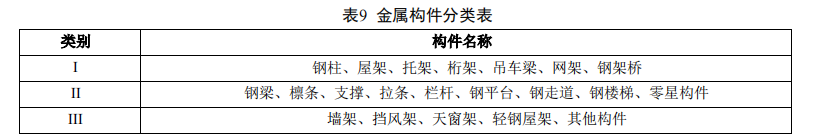
三、彩钢板及其他工程
1．压型钢板楼层板栓钉套用栓钉子目另行计算。
2．压型钢板楼层板不包括收边工程，应单独计算。
3．自承式楼层板钢筋桁架套用钢筋子目另行计算。
4．墙面板及屋面板按平板编制，如设计为曲板时，人工乘以1.50系数。
四、工程量计算规则
（一）金属构件制作、安装、运输
1．金属构件质量按设计图示尺寸乘以理论质量计算。
2．金属构件计算工程量时，不扣除单个面积≤0.30m²的孔洞质量，焊缝、铆钉、螺栓等不另增
加质量。
3．焊接球节点网架质量包括连接钢管杆件、连接球、支托等构件质量，螺栓球节点网架质量
包括连接钢管杆件（含高强螺栓、销子、套筒、锥头或封板）、连接球、支托等构件质量。
4．钢柱上的牛腿、柱脚板、加劲板、柱顶板、隔板和肋板等质量并入钢柱工程量。
5．钢吊车轨道工程量只计算轨道本身重量，不包括轨道垫板、压板、斜垫、夹板及联接角钢
等重量。
6．钢平台工程量包括钢平台的柱、梁、板、斜撑及平台钢栏杆等质量。
7．钢楼梯工程量包括楼梯平台、楼梯梁及楼梯踏步等质量，依附于钢楼梯的钢扶手及钢栏杆
纳入钢楼梯工程量。
8．机械除锈按设计图纸的构件质量计算。
9．钢构件现场拼装平台摊销工程量按实施拼装构件的工程量计算。
（二）彩钢板及其他工程
1．楼层板、屋面板按设计图示尺寸以铺设面积计算，不扣除单个面积≤0.30m²的柱、垛及孔洞
面积。
2．墙面板按设计图示尺寸以铺挂面积计算，不扣除单个面积≤0.30m²的梁、孔洞面积。
3．钢天沟按设计图示尺寸以展开面积计算，天沟的支撑骨架执行本定额“天棚工程”节中
“型钢龙骨”子目。
4．封边包角槽铝檐口端面高度按150编制，工程量按设计图示尺寸以延米计算；其他材料封边
包角按设计图示尺寸以展开面积计算。
一、保护层子目包括预留伸缩缝等内容，掺防水剂时材料费另加，其它不变。
二、屋面面层
（一）瓦屋面
1．当设计采用的瓦种类和规格与定额子目不同时，可等比例抽换。
2．瓦屋面子目不包括抹瓦出线，发生时按设计图示长度以延长米计算，执行本定额“墙柱面
工程”节中“装饰线抹灰”子目。
（二）种植屋面包含卵石排水层及以上部分，不含种植土材料，保护层、挡土矮墙及走道板另
行计列。
三、防水卷材定额包括附加层、接缝、收头等内容。
四、细石混凝土防水层子目包括檐口滴水线加厚和伸缩缝翻边加高等内容。
五、止水带按以下规格编制：紫铜板止水带450×2、氯丁胶片300×2、氯丁胶贴玻璃纤维布宽
350、钢板止水带300×3，橡胶150×30。如设计断面不同时，用料可以换算，人工不变。
六、工程量计算规则
1．屋面保温层、找平层、保护层、隔离层工程量按设计图示尺寸以面积计算，不扣除单个≤
0.30m2孔洞面积。
2．屋面找坡按设计图示水平投影面积乘以平均厚度以体积计算。
3．屋面面层及刚性防水按设计图示尺寸以 面积计算，不扣除单个≤0.30m2孔洞及烟囱、风帽
底座、风道、小气窗面积，小气窗出檐部分及洞口翻边不增加。
4．膜结构屋面按设计图示尺寸以覆盖的水平投影面积计算，膜材料含量可根据设计进行调整。
5．雨水管按设计图示尺寸以长度计算，雨水管长度由檐沟底面（无檐沟的由水斗下口）算至室
外设计地坪标高；雨水管子目包括落水口、接头及卡箍等内容。
6．平面防水按主墙间净面积计算，应扣除凸出地面的构筑物、设备基础等面积，不扣除柱、
垛、间壁墙、附墙烟囱及单个≤0.30m2孔洞面积。
7．立面防水按实铺面积计算，应扣除单个面积＞0.30m2孔洞面积，孔侧展开面积计算并入。
8．平面与立面连接处高度≤500立面面积应并入平面防水计算，立面高度＞500立面面积应按
立面防水计算。
9．屋面防水卷材和涂料按实铺面积计算，不扣除烟囱、风（烟）道、风帽底座、屋面小气窗
和斜沟等面积；天沟、挑檐按展开面积计算并入；伸缩缝、女儿墙和天窗处弯起部分按设计图示尺
寸计算并入，如设计无规定，伸缩缝、女儿墙弯起高度按250、天窗弯起高度按500。
一、机械垂直运输定额按常规施工组织设计综合考虑，除另有规定或特殊要求外，不得调整。
二、檐高 3.60m以内的单层建筑不计列垂直运输。
三、建筑物超高增加定额适用于单层建筑物檐高超过20m、多层建筑物超过6层的工程。
四、工程量计算规则
1．机械垂直运输区分不同建筑物结构及檐高按建筑面积（含地下室面积）计算。
2．檐高20m以上机械垂直运输、建筑物超高增加每增10m子目，不足10m时，超过5m按增加
10m计算，5m以下不计。
3．建筑物超高增加费按建筑物超高部分的建筑面积计算。
第九节 修缮工程
一、本节定额适用于房屋的零星拆除、结构加固工程，不能用于全房拆除工程。
二、本节定额包括本建筑物和毗连部位的支顶加固、现场监护和将拆下的可用材料和渣土废弃
材料运至 30m 以内指定地点、垂直运输、清理归堆、码放整齐。
三、瓦屋面拆除包括瓦笆、荆笆、条砖、石板、基层及以上的屋面拆除。
四、整樘门窗拆除包括门、窗框及扇的整体拆除；天窗拆除包括天窗木构件、装修及屋顶的全
部拆除。
五、天棚拆除包括吊杆、骨架及面层的全部拆除。
六、楼地面拆除不包括地面垫层的拆除。
七、混凝土及钢筋混凝土构件拆除包括断钢筋、剔凿、落料等工序；钢筋混凝土梁、柱、板、
屋架等大构件拆除，如需搭拆绞磨抱杆等吊装工具另行计算。
八、屋架拆除包括切割锚固件、风撑、水平撑和屋架的各种附件拆除。
九、静力切割定额按切割刀片的位置不同分为水平切割和竖向切割，定额按切割混凝土构件编
制，如需切割砖砌体等构件时，定额乘以系数0.60 。
十、混凝土加固定额不包括钢筋、预埋铁件、钢丝网等内容。构件增大截面子目适用于在保留
原混凝土结构的基础上外包混凝土，消耗量已包括因混凝土表面凿毛所需填平补齐的用量。
十一、狭条粘钢、狭形碳纤维布加固按照宽度小于150编制，宽形碳纤维布加固按照宽度大于
150编制。双层粘钢厚度为两层钢板厚度之和。
十二、粘贴碳纤维布加固子目包括纤维布的搭接及损耗量。
十三、混凝土后植钢筋定额不含钢筋主材，化学锚栓定额包含化学锚栓、帽等主材。
十四、工程量计算规则
1．屋面拆除按屋面的实拆面积计算。
2．砌体拆除按实拆体积计算，不扣除 0.03m2 以内孔洞和构件所占的体积。
3．天棚拆除按水平投影面积计算，不扣除室内柱子所占的面积。
4．地面拆除按水平投影面积计算，踢脚板拆除并入地面面积计算。
5．混凝土及钢筋混凝土构件拆除按实拆体积计算。
6．静力切割按切割面的断面面积计算；如混凝土块切割后体积过大需破碎时，按拆除混凝土
相应子目乘以系数 0.80。
7．钢结构拆除（除钢楼梯钢栏杆），按设计图示尺寸以重量计算，不扣除孔眼、切肢、切边的
重量，焊条、铆钉、螺栓不另增加重量。
8．钢加固、碳纤维布加固按实贴面积计算，已包含搭接工程量。
9．砌体钢筋网抹水泥砂浆加固，按加固面积计算，已包含伸入地面、楼板墙体内工程量。
本章包括楼地面工程、墙柱面工程、天棚工程、门窗工程、油漆及涂料工程、建筑配件工程
6 节。
一、水磨石地面水泥石子浆的配合比，设计与定额不同时，可以调整。
二、采用地暖的地面垫层，按不同材料执行相应项目，人工乘以系数 1.30，材料乘以系数
0.95。
三、块料面层
1．镶嵌规格 100×100 以内的石材面层执行本节点缀子目。
2．玻化砖按陶瓷面砖相应子目执行。
3．石材楼地面需做分格、分色时，按相应子目人工乘以系数 1.10。
四、木地板
1．木地板安装按成品企口考虑，采用平口安装时，人工乘以系数 0.85。
2．木地板填充材料执行本节“楼地面保温、隔热、隔声”相应子目。
五、弧形踢脚线、楼梯段踢脚线按相应子目人工及机械乘以系数 1.15。
六、圆弧形等不规则楼地面镶贴面层按相应子目人工乘以系数 1.15。
七、水磨石地面包含酸洗打蜡内容，其他面层做酸洗打蜡时，另执行本节酸洗打蜡相应子目。
八、楼梯装饰定额包括踏步、休息平台和楼梯踢脚等。弧形楼梯面层时，按相应子目人工乘以
系数 1.25。
九、台阶、坡道、散水定额包括面层和结合层，不包括垫层。
十、台阶的平台宽度（外墙面至最高一级台阶外边线）在 2.50m 以内时，平台执行台阶子目；
超过 2.50m 时，平台执行楼地面相应子目。
十一、工程量计算规则
1．楼地面工程的室内房间净面积应扣除沟道、凸出地面构筑物、设备基础等所占面积，不
扣除柱垛、间壁墙、附墙烟囱、风道及面积≤0.30m2 孔洞所占面积。
2．石材拼花按最大外围矩形面积计算，有拼花的石材地面按设计图示尺寸扣除拼花的最大外
围矩形面积计算面积。
3．点缀按个计算，计算铺贴地面面积时不扣除点缀所占面积。
4．石材底面刷养护液包括侧面涂刷，工程量按设计图示尺寸以底面积计算；石材表面刷保护
液按设计图示尺寸以表面积计算。
5．石材勾缝按设计图示尺寸以石材面积计算。
6．楼梯面层按设计图示尺寸以楼梯（包括踏步、休息平台及≤500 的楼梯井）水平投影面积计
算。楼梯与楼地面相连时，算至梯口梁内侧；无梯口梁时，算至最上一层踏步边沿加 300 。
7．台阶面层按设计图示尺寸以台阶（包括最上层踏步边沿加 300）水平投影面积计算；坡道按
设计图示尺寸以水平投影面积计算。
一、圆弧形、锯齿形等不规则墙面抹灰、镶贴块料、幕墙按相应子目人工及机械乘以系数
1.15。
二、预埋铁件执行本定额“混凝土及钢筋混凝土工程”节中相应子目。
三、本节块料面层、饰面面层、幕墙工程子目均不包括金属龙骨骨架。
四、墙柱面抹灰
1．一般抹灰中“装饰线抹灰”子目适用于门窗套、挑檐、腰线、压顶、遮阳板外边、宣传栏
边框以及突出墙面且展开宽度≤300 的竖、横线条等抹灰工程；300＜线条展开宽度≤400 时，乘以
系数 1.33；400＜线条展开宽度≤500 时，乘以系数 1.67。
2．一般抹灰中“零星抹灰”子目适用于壁柜、碗柜、飘窗板、空调隔板、暖气罩、池槽、花
台以及面积≤0.50m² 等抹灰工程。
3．勾缝子目按勾缝区域墙面垂直投影面积计算。
五、粘贴玻化砖、干挂玻化砖按面砖相应子目执行。
六、柱帽、柱墩并入相应柱面积内计算，每个柱帽、柱墩另增人工：抹灰 0.25 工日，块料 0.38
工日，饰面 0.50 工日。
七、幕墙
1．玻璃幕墙子目按中空钢化 6+12+6 规格编制，铝板幕墙子目按氟碳喷涂铝单板 2.5mm 规格编
制，铝塑板幕墙子目按 4mm 铝塑复合板规格编制，全玻璃幕墙子目按 15mm 钢化玻璃规格编制，
陶土板幕墙子目按 400×1000×18 规格编制，当设计规格与定额不一致时可调整。
2．幕墙子目已综合考虑避雷装置、幕墙封边、封顶费用。
3．玻璃幕墙设计有平开、推拉窗时，并入幕墙面积计算，窗的型材用量、五金用量可调整。
4．幕墙定额中均不包括保温材料，需要时按相应定额计算。
八、骨架
1．墙柱饰面龙骨间距、规格设计与定额不一致时可以调整。
2．木龙骨按双向编制，设计为单向时乘以系数 0.55。
3．当设计要求做防火处理时，执行本定额“油漆及涂料工程”中相应子目。
九、工程量计算规则
（一）抹灰
1．内墙面、墙裙抹灰面积应扣除门窗洞口和单个面积>0.30m²的孔洞所占面积，不扣除踢脚
线、挂镜线及单个面积≤0.30m²的孔洞和墙与构件交接处的面积，且门窗洞口、孔洞的侧壁面积亦
不增加，附墙柱的侧面抹灰应并入墙面、墙裙抹灰工程量内计算。
2．内墙面、墙裙的长度以主墙间的净长计算，墙面高度按室内地面至天棚底面净高计算，墙
面抹灰面积应扣除墙裙抹灰面积，如墙面和墙裙抹灰种类相同时，工程量合并计算。
3．如设计有室内吊顶，内墙抹灰、柱面抹灰的高度算至吊顶底面另加 100。
4．外墙抹灰面积按垂直投影面积计算，应扣除门窗洞口、外墙裙（墙面和墙裙抹灰种类相同
时应合并计算）和单个面积>0.30m²的孔洞所占面积，不扣除单个面积≤0.30m²的孔洞所占面积，门
窗洞口及孔洞侧壁面积亦不增加。附墙柱侧面抹灰面积应并入外墙面抹灰面积工程量内。
5．柱抹灰按结构断面周长乘以抹灰高度计算。
6．装饰抹灰分格嵌缝按抹灰面面积计算。
7．“零星项目”按设计图示尺寸以展开面积计算。
（二）块料面层
1．柱帽、柱墩工程量按设计图示尺寸以展开面积并入相应柱面积计算。
2．镶贴块料面层，按镶贴表面积计算。
3．柱镶贴块料面层按设计图示饰面外围尺寸乘以高度以面积计算。
（三）墙饰面
1．龙骨、基层、面层墙饰面项目按设计图示饰面尺寸以面积计算，扣除门窗洞口及单个面
积>0.30m²的孔洞所占面积，不扣除单个面积≤0.30m²的孔洞所占面积。
2．柱（梁）饰面的龙骨、基层、面层按设计图示饰面尺寸以面积计算，柱帽、柱墩工程量按
设计图示尺寸以展开面积并入相应柱面积计算。
（四）幕墙、隔断
1．玻璃幕墙、铝板幕墙以框外围面积计算；半玻璃隔断、全玻璃幕墙如有加强肋时，按其展
开面积计算。
2．隔断按设计图示框外围尺寸以面积计算，扣除门窗洞及单个面积>0.30m²的孔洞所占面积。
一、天棚抹灰
1．抹灰项目中砂浆配合比与设计不同时，可按设计要求予以换算；如设计厚度与定额取定厚
度不同时，按相应项目调整。
2．预制板的抹灰、满刮腻子、粘贴面层均包括预制板勾缝。
3．檐口天棚的抹灰，并入相应天棚抹灰工程量计算。
二、天棚龙骨、天棚面层
天棚龙骨与天棚面层子目分别编制，使用时应根据不同龙骨和面层分别执行相应子目。其
他天棚项目，综合了龙骨与面层，不得重复计算。
三、天棚面层装饰
1．天棚面板子目按单层编制，若设计采用双层面板时，面层材料乘以 2。
2．料顶棚涂和粘贴面层不包括满刮腻子，如需满刮腻子时执行满刮腻子相应子目。
3．雨棚封檐板可按封檐板材料套用相应天棚面层装饰子目。
四、其他天棚
1．藻井灯带子目不包括灯带挑出部分端头的木装饰线，当设计要求采用木装饰线时，按装
饰线条子目计算。
2．金属条形格片吊顶、金属花格栅吊顶子目，均须按设计选定主材的尺寸规格所对应的价
格进行调整后使用。
五、工程量计算规则
（一）天棚抹灰
按设计图示尺寸以展开面积计算天棚抹灰。不扣除间壁墙、垛、柱、附墙烟囱、检查口和管道
所占面积，带梁天棚的梁两侧抹灰面积并入天棚面积内，板式楼梯底面抹灰面积（包括踏步、休息
平台以及≤500 宽的楼梯井）按水平投影面积乘以系数 1.15 计算，锯齿形楼梯底板抹灰面积（包括
踏步、休息平台以及≤500 宽的楼梯井）按水平投影面积乘以系数 1.37 计算。
（二）天棚龙骨
1．各种吊顶天棚龙骨按主墙间净空面积计算，不扣除间壁墙、检查口、附墙烟囱、柱、垛
和管道所占面积。天棚的折线、迭落等圆弧形，高低吊灯槽等面积不展开计算。
2．拱形吊顶和穹顶吊顶龙骨按拱顶和穹顶部分的水平投影面积算。
3．高低错台龙骨高处与低处的龙骨合并计算，低处挑出部分的龙骨按挑出部分的水平投影
面积计算，并入天棚龙骨工程量中。立面封板龙骨按立面封板的垂直投影面积计算。
4．嵌顶灯槽附加龙骨按数量计算；嵌顶灯带附加龙骨按长度计算。
（三）天棚面层
1．天棚面层按房间净面积计算，不扣除间壁墙、检查口、附墙烟囱、附墙垛和管道所占面
积，应扣除独立柱、与天棚相连的窗帘盒、0.30m2 以上孔洞及嵌顶灯槽所占面积。
2．天棚中折线、错台、拱型、穹顶、高低灯槽、雨棚封檐板等其他艺术形式的天棚面积均
按设计图示展开面积计算。
（四）其他天棚
1．金属格栅吊顶、硬木格栅吊顶等均根据天棚设计图示尺寸按水平投影面积计算。
2．玻璃采光天棚根据玻璃天棚面层的设计图示尺寸按展开面积计算。
3．藻井灯带按灯带外边线的设计尺寸长度计算。
4．天棚吸音保温层按吸音保温天棚的设计图示尺寸 计算。
一、木门不包括特殊五金及门锁，其费用按相关子目另计。
二、铝合金门窗、塑钢门窗、彩板门窗、钢门窗、不锈钢门窗、特种门等成品门窗安装定
额中，一般五金配件费用均包含在门窗价格中。
三、塑钢门窗及彩板门窗定额子目中包括纱门、纱扇。
四、不锈钢自动门不包括电子感应装置。
五、人防混凝土门和挡窗板均包括钢门窗框。
六、防火门定额子目不包括门锁、闭门器、防火玻璃等。
七、围墙的钢栅栏大门、钢大门、不锈钢伸缩门包括地轨的制作及安装。
八、门窗筒子板的制作安装包括门窗洞口侧壁及正面的装饰，不包括装饰线；门窗筒子板
上的装饰线、门窗洞口正面的装饰成品贴脸，执行装饰线条定额。
九、工程量计算规则
1．门窗按门窗框外围尺寸，以面积计算；不带框的门按门扇外围尺寸，以面积计算。
2．卷帘门按洞口高度增加 600、乘以门的设计图示宽度，以面积计算。
3．人防混凝土门和挡窗板按门和挡窗板的外围设计图示尺寸，以面积计算。
4．不锈钢包门框按门框展开面积计算；固定亮玻璃设计图示尺寸，以面积计算；有框玻璃
门、不锈钢自动门按玻璃门设计图示尺寸，以面积计算。
5．围墙大门中钢栅栏大门、钢板大门按设计图示尺寸以面积计算；不锈钢电动伸缩门按门洞
宽度，以长度计算。
6．窗台板按设计图示长度乘宽度以面积计算。图纸未注明尺寸时，窗台板长度可按窗框外围
宽度两边共加 100 计算。窗台板凸出墙面的宽度按墙面外加 50 计算。
7．门窗套（筒子板）龙骨、面层、基层均按设计图示饰面外围尺寸展开面积计算。成品门
窗套按设计图示饰面外围尺寸展开面积计算。
8．窗帘盒、窗帘轨按设计图示长度计算。
9．不锈钢防盗网、铁窗栅按窗洞口面积计算。
一、定额按手工操作编制，如实际采用操作方法不同时，不得调整。
二、定额综合考虑油漆浅、中、深各种颜色．如设计颜色不同时，不得调整。
三、定额综合考虑在同一平面上的分色，美术图案需另外计算。
四、定额中金属结构构件刷油包括高处作业的人工费及高度在 3.60m 以内的脚手架费用。
如在 3.60m 以上刷油时，按本定额“脚手架工程”节中有关规定计算脚手架。
五、金属面油漆项目均考虑了手工除锈，如实际为机械除锈，另按本定额“金属结构工
程”节中相应子目执行，油漆项目中除锈用工不扣除。
六、金属面防火涂料子目未包括刷防锈漆。
七、油漆、涂料子目中已考虑刮腻子。当抹灰面油漆、喷刷涂料设计与定额取定的刮腻子
遍数不同时，可执行本节“喷刷涂料”中“刮腻子每增减一遍”子目进行调整。喷刷涂料中刮
腻子子目仅适用于单独刮腻子工程。
八、附着安装在同材质装饰面上的木线条、石膏线条等油漆、涂料，与装饰面同色时，并
入装饰面计算；与装饰面分色时，单独计算。
九、门窗套、窗台板、腰线、压顶等抹灰面刷油漆、涂料，与整体墙面同色时，并入墙面
计算；与整体墙面分色时，单独计算，按墙面相应项目执行，其中人工乘以系数 1.43。
十、纸面石膏板等装饰板材面刮腻子刷油漆、涂料，按抹灰面刮腻子刷油漆、涂料相应子
目执行。
十一、附墙柱抹灰面喷刷油漆、涂料、裱糊，按墙面相应子目执行；独立柱抹灰面喷刷油
漆、涂料、裱糊，按墙面相应子目执行，其中人工乘以系数 1.20。
十二、工程量计算规则
（一）木材面油漆均按展开面积计算。
（二）金属面油漆工程量按表 10 规定的计算方法和相应系数，以面积或金属构件重量计
算。其中质量在 500kg 以内的单个金属构件，可参考表 11 相应系数，将质量折算为面积。
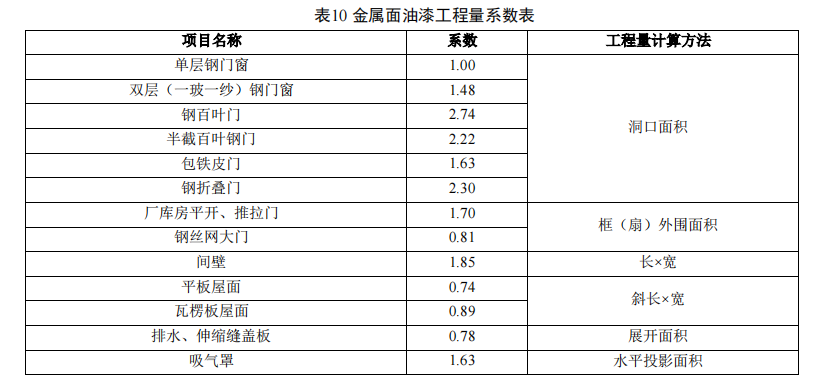
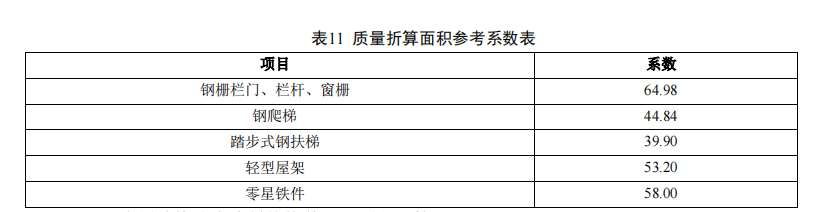
（三）金属结构防火涂料按构件展开面积计算。
（四）抹灰面油漆、涂料工程
1．抹灰面油漆、涂料（另做说明除外）按设计图示尺寸以面积计算。
2．槽形底板、混凝土折瓦板、有梁板底、密肋梁板底、井字梁板底刷油漆、涂料按设计图
示尺寸展开面积计算。
3．墙面及天棚面刷石灰浆、普通水泥浆、可赛银、大白浆等涂料工程量按抹灰面积工程量
计算规则。
4．混凝土花格窗、栏杆花饰刷（喷）油漆、涂料按设计图示洞口面积计算。
5．墙面真石漆、氟碳漆项目不包括分格嵌缝，当设计要求分格嵌缝时费用另计。
（五）墙面、天棚面裱糊按设计图示尺寸以面积计算。
一、暖气罩台和窗台为一体时，执行门窗窗台板相应子目。
二、装饰线子目适用于内外墙面、柱面、橱柜、天棚及其他部位饰面装饰线的设计。
三、装饰线按不同材质区分为：
1．板条：指板的正面与背面均为平面且无造型。
2．平线：指背面为平面、正面为各种造型的线条。
3．角线：指线条背面为三角形，正面有造型的阴、阳角装饰线条。
4．角花：指呈直角三角形的工艺造型装饰件。
5．槽线：指用于嵌缝的 U 形线条。
6．欧式装饰线：指欧式风格的各种装饰线。
四、栏杆、栏板、扶手
1．钢栏杆子目适用于钢楼梯、钢平台及钢走道板等与金属结构相连的栏杆，不锈钢栏
杆、玻璃栏板、靠墙扶手子目适用于楼梯、走廊、同廊及其他装饰性栏杆、栏板、扶手。
2．栏杆、栏板、扶手子目综合考虑扶手弯头的费用。当设计栏杆、栏板的主材消耗量与定
额不同时，可以调整。
五、灯箱标识（含站房大字）定额，包括面板内构造钢骨架，面板与吊杆、钢结构的连接
螺栓等费用。吊挂灯箱面板外安装吊杆、站房大字灯箱外钢结构，另执行本定额“金属结构工
程”节中相应子目计算。落地灯箱、立柱灯箱、镶嵌灯箱包括除混凝土基础外的全部费用，悬
挑灯箱、贴附标识包括全部费用。
六、旗杆子目按常用做法考虑，不包括旗杆基础、旗杆台座及其饰面。
七、工程量计算规则
（一）暖气罩、镜子布告牌按设计图示尺寸以面积计算。
（二）装饰线
1．板条、平线、角线、槽线均按设计图示尺寸以长度计算。
2．镜框线、柜橱线按设计图示尺寸以长度计算。
3．欧式装饰线中的外挂檐口板、腰线板分规格按设计图示尺寸以长度计算。
4．其他装饰线按设计图示尺寸以长度计算。
（三）栏杆、栏板、扶手
1．钢栏杆包括扶手的质量，合并套用钢栏杆子目。
2．不锈钢栏杆、玻璃栏板、靠墙扶手子目均按其中心线长度计算，不扣除弯头长度。
（四）灯箱、招牌
1．铁路专用灯箱标识，按设计面积 计算，双面灯箱按单面计算。
2．钢结构箱式招牌基层，按设计图示外围体积计算。
3．平面招牌基层，按设计图示垂直投影面积 计算。
4．自粘字按设计图示尺寸以 面积计算。
（五）变形缝以延长米计算，断面或展开尺寸与定额不同时，材料用量按比例换算。
（六）车库标线包含各类油漆损耗，按设计图示尺寸以面积计算。
本章包括给排水及消防工程、采暖工程、通风及空调工程、其他 4 节。
一、管道
1．管道定额按低压管道编制，中高压管道执行《铁路工程预算定额 第十二册 机务车辆机
械工程》相关子目。
2．室内外界线划分
（1）给水管道：以入户水表井或交汇井为界， 无入户水表井或交汇井而直接入户时，以建筑
物外墙皮以外 1.50m 为界。
（2）排水管道：以出户第一个排水检查井或化粪池为界。
（3）热网管道、工艺管道：以出户第一个阀门井或建筑物外墙皮为界。设在高层建筑内的加
压泵间管道，以泵间外墙为界。
3．定额工作内容除注明情况外，尚包括以下内容：
（1）管道及接头零件安装。
（2）灌洗试验。
（3）DN25 以下钢管包括管卡及托钩制作安装。
（4）钢管包括弯管制作安装（伸缩器除外）。
（5）铸铁、塑料排水管均包括管卡及吊托支架、臭气帽制作安装。
（6）穿墙及过楼板铁皮套管安装的人工。
4．室内管道沟土方及管道基础，执行本定额“土建工程”章中相应子目。
5．室内给水、排水铸铁管定额已包括接头零件所需人工，未包括接头零件本身。
6．穿墙及过楼板钢套管制作安装采用室外钢管（焊接）相应定额。
二、螺纹阀及法兰阀安装定额，适用于各种内外螺纹与法兰连接的阀门安装。当设计采用
阀门与定额不同时，可抽换，其他不变。
三、卫生器具安装
1．浴盆安装定额中未包括浴盆支座、浴盆四周侧面的砌砖和瓷砖的粘贴。
2．化验盆安装子目适用于成品安装。
3．卫生器具安装定额已综合卫生器具与给、排水管连接的工料消耗。
四、冷热水混合器安装定额中包括温度计安装，未包括支架、阀门和疏水器安装。
五、水箱安装定额适用于给排水、采暖、空调系统中低压碳钢容器安装。定额中未包括连
接管和支架，可分别按室内管道安装和一般管道支架定额计算。砖支座可执行本定额“土建工
程”章中相应子目。
六、消防水泵接合器安装定额包括法兰接管及弯头的安装，未包括法兰接管及弯头材料。
八、报警装置安装定额适用于雨淋、干湿两用及预作用报警装置，定额已包括装配管（除
水力警铃进水管）的安装；水力警铃进水管可执行管道安装相应子目。
九、喷洒头、水流指示器、报警装置及末端试水装置安装定额按管网系统试压、冲洗合格
后安装编制，包括丝堵、临时短管的安装、拆除及其摊销费用。
十、气体驱动装置管道安装定额未包括卡套连接件。
十一、贮存装置安装定额中已包括灭火剂贮存容器、系统组件（集流管、容器阀、气液单
向阀、高压软管）、安全阀及阀驱动装置的安装和氮气增压，适用于无管网气消装置和有管网
灭火剂贮存装置的安装。适用气体灭火剂范围包括气溶胶，七氟丙烷、三氟甲烷等卤代烷、二
氧化碳等气体灭火剂。二氧化碳贮存装置安装不需增压，执行定额时应扣除高纯氮气，其他不
变。驱动气瓶安装固定支框架应按设备支架计算。
十二、二氧化碳称重检漏装置定额包括泄露报警开关、配重及固定。
十三、泡沫发生器、泡沫比例混合器安装定额包括整体安装、焊法兰、单体调试及配合管
道试压时隔离本体所需的工料消耗，未包括支架制作、安装和二次灌浆。
十四、工程量计算规则
（一）管道安装
1．各种管道均以设计图示管道中心线长度计算，不扣除阀门及管件（包括减压器、疏水
器、水表、伸缩器等）所占长度。
2．镀锌铁皮套管安装已包括在管道安装定额内。
3．DN25 以下的室内管道定额已包括管道支架制作安装；DN25 以上的管道，未包括管道
支架制作安装，应按设计数量，以重量计算。
4．管道消毒、冲洗，按管长度计算，不扣除阀门、管件所占长度。
（二）栓类阀门安装
1．室内消火栓水龙带长度以 25m 编制，超过时可调整。
2．法兰阀门安装，如仅为一侧法兰连接时，定额所列法兰、带帽螺栓及垫圈数量减半，其
余不变。
（三）水表安装定额中的阀件，如设计与定额不同时，可按设计调整，其余不变。
（四）电热水器、电开水器安装只考虑本体安装，未包括连接管、管件等。
一、采暖系统管道安装按给排水及消防工程相应子目执行。
二、减压器、疏水器组成安装定额，如设计与定额不同时， 阀门和压力表数量可调整，其
余不变。
三、低温地板辐射采暖定额已包括地面浇注配合用工；用铝塑复合管、聚丁烯管、聚丙烯
管、聚乙烯管等管道作为地板供暖管道时，均执行本定额。
四、散热器不分明装、暗装，均执行本定额。
五、热空气幕安装定额中未包括支架制作、安装，可执行一般式支架制作安装定额。
六、工程量计算规则
减压器安装按高压侧的直径以组计算。
一、空调部件及设备支架
1．保温钢板密闭门安装执行钢板密闭门安装定额，材料乘以系数 0.50，机械台班乘以系
数 0.30，人工不变。
2．风机减震台座可执行设备支架子目，减震器另计。
3．洁净室安装执行组合式空调机组安装子目。
二、风管
1．风管、调节阀、风口、风帽定额中的法兰垫料系按石棉绳编制，如设计采用的材料与定
额不同时可进行换算，人工不变。每 1kg 石棉绳换算成橡胶板为 4kg，换算成泡沫塑料为
0.50kg，换算成闭孔乳胶海棉为 2kg，玻璃钢子目中换算成橡胶海棉为 3.50kg。
2．整个通风系统设计采用渐缩管均匀送风时，矩形风管按平均周长、圆形风管按平均直径
套用相应子目，人工乘以系数 2.50。
3．制作空气幕送风管时按矩形风管平均周长套用相应子目，人工乘以系数 3，其余不变。
4．薄钢板、玻璃钢通风管道制作安装定额，包括弯头、三通、变径管、天圆地方管件及法
兰、加固框和吊托支架，未包括跨风管落地支架，落地支架套用设备支架定额。
5．薄钢板通风管的壁厚与设计不同时，可以换算，其余不变。
6．风管直径为内直径、周长为内周长。
7．玻璃钢通风管道安装子目按预留铁件编制，如设计采用膨胀螺栓安装吊托支架时，可
按设计调整，其余不变。
三、工程量计算规则
1．管道制作安装
（1）风管按设计图示展开面积计算，不扣除检查孔、测定孔、送风孔、吸风口等所占面
积。展开面积按设计图示周长乘以管道中心长度计算。
（2）计算风管长度时，以设计图示中心长度为准（主管与支管以其中心线交点划分），包
括弯头、三通、变径管、天圆地方等管件的长度，但不包括部件所占长度。直径和周长按设计
图示尺寸计算，咬口重叠部分已包括在定额内，不另增加。
2．通风管道检测按通风道展开面积计算。
一、系统调试适用于消防、采暖、空调工程的系统调试，其中采暖工程按由采暖系统管
道、管件、阀门、法兰、供暖器具组成的采暖工程系统计算，空调工程按空调水系统管道、管
件、阀门、法兰、空调组成的设备器具空调工程系统计算。
二、脚手架搭拆
1．脚手架搭拆不包括工程项目安全、环保、文明等工作内容。
2．脚手架搭拆综合考虑不同结构形式、材质、规模、占用时间等要素，除定额规定不计取
脚手架搭拆费用外，执行定额时不做调整 。同一单位工程有若干专业安装时，符合脚手架搭拆
计算规定的应分别计取脚手架搭拆费用。
三、工程量计算规则
1．系统调试以消防、采暖、空调系统工程所有子目的综合工日为计算基数。
2．脚手架搭拆以本章所有子目的综合工日为计算基数，单独承担的室外埋地管道工程不计
取脚手架搭拆费用。